Knapper, der føles dyre
8/11. Din dom over Fortnite-skarp: bedre, men "som Paint, hvor man har smidt et lag oven på et andet lag". Her er, hvorfor det så sådan ud, hvad de dyre spil gør, en ny prøve (Skarp 2, gratis, stadig slukket i spillet) og min anbefaling.
Kort fortalt
- Fejlen sad i lyset, ikke i formen. Hver effekt var sin egen flade figur med en hård kant, og intet kom fra samme lampe. Det er præcis "lag på lag".
- De dyre spil (Clash Royale, Brawl Stars, Hearthstone, League of Legends) belyser alt fra én lampe, lader lyset følge formen, har kun én hård kant (den mørke omkreds) og giver fladen et materiale: glimt, genskin og korn.
- Skarp 2 er de samme skrå knapper, nu belyst sådan. Gratis, i koden, fra den rigtige app.
- Anbefaling: se Skarp 2. Rammer den, så næste trin gratis i koden (afrundet kant og paneler som sløret glas), evt. ét malet materialeark (ca. 1-2 kr.). Det fulde malede sæt (ca. 10 kr.) kun, hvis du vil have et håndmalet udtryk.
Tæt på: klodserne
Se sømmen hen over midten af hver klods i Skarp 1 (blankheden er et hvidt felt, skåret over), striberne og den lyse streg om foden. I Skarp 2 er kanten en skrå fas, lys foroven og til venstre, mørk til højre og forneden, blankheden toner blødt ud, og fladen har et svagt korn.
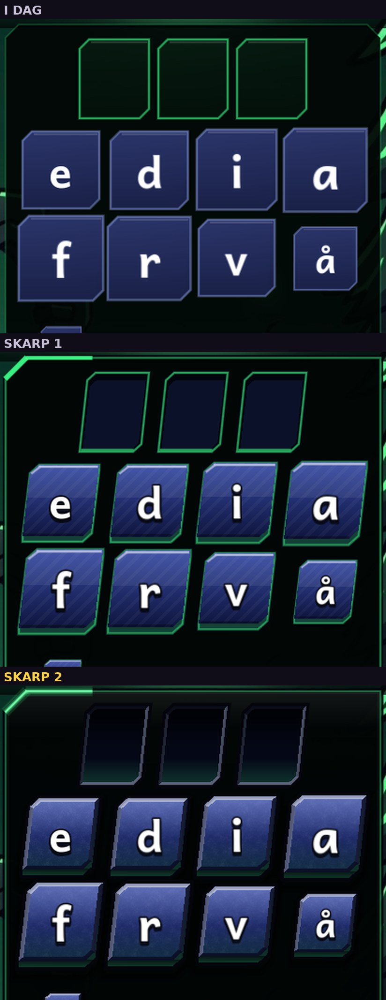
SPIL! og knapperne forneden
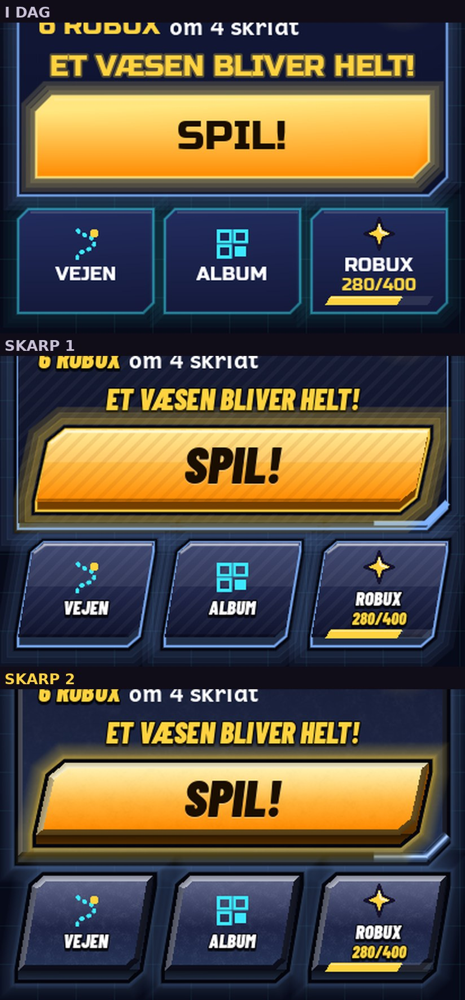
Felterne, når ordet er rigtigt
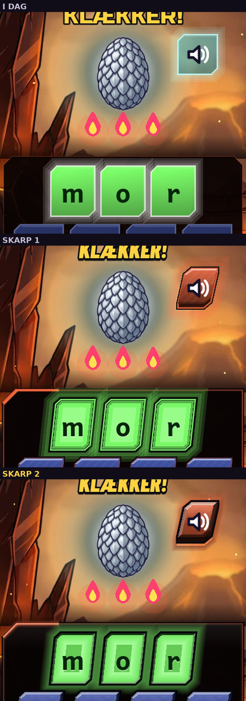
Hvorfor Skarp 1 lignede lag i Paint
- Hver effekt var en flad figur med hård kant: blankheden skåret lige over i halv højde (en søm på hver klods), striber og lysstreger hver for sig.
- Ingen fælles lampe: lyse streger, mørke streger, blankhed og glød, men intet fra samme lys, og intet fulgte formens kanter.
- Tre ringe uden på hinanden: sort kant, en flad underkant og en tynd farvet streg om det hele. Den lyse streg om foden ligner et klistermærkes kant.
- Ingen bløde overgange: gløden var tre trin af streger, ingen skygge under knappen, ingen mørk fold under fladen.
- Samme stribemønster på alt: et mønster uden materiale er en fyldfunktion i et tegneprogram.
- Uklart materiale: hverken emalje, metal eller sten, bare en overgang mellem to farver.
- Fire stilarter på én gang: Fortnites flade skrå former, Clash' tykke underkant, neon-glød og hjørnestreger.
Hvad de dyre spil gør
- Én lampe for alt, oppefra og lidt fra venstre. Hævet: lys foroven, skygge under. Sænket: omvendt.
- Lyset følger formen. En kant er lys eller mørk efter, hvilken vej den vender. Glansen sidder på formen, ikke som et rektangel ovenpå.
- Kun én hård kant: den mørke omkreds. Alt indenfor glider. Selv Brawl Stars' hårde skygger følger formen.
- Dybde i folden: det mørkeste sidder, hvor to flader mødes, og en blød skygge, hvor knappen står. På mørke flader kommer dybden mest fra lys.
- Materiale: tre toner, ét glimt, lidt lys kastet tilbage nedefra og et svagt korn, der følger med tingen.
- Ét sprog, og guld kun på det vigtigste (League of Legends, Marvel Snap).
- Bevægelse sælger det: et lysbånd, der glider over; et tryk, der synker.
Sådan laves de: de store mobilspil maler eller renderer knapperne og skærer dem i 9 felter, så hjørnerne bevares. For os er ulempen, at en skrå knap kun kan strækkes på langs, at hver verdens farve og hvert tryk bliver et nyt billede, og at malede effekter ikke kan farves om. Koden følger form, størrelse, farve og tryk gratis; materialet bliver kun så rigt, som koden gør det.
Hele skærme: i dag, Skarp 1, Skarp 2
Fra den pakkede app, som telefonen kører den, 412×915. Tryk på et billede for at se det stort.
Skyggeskov

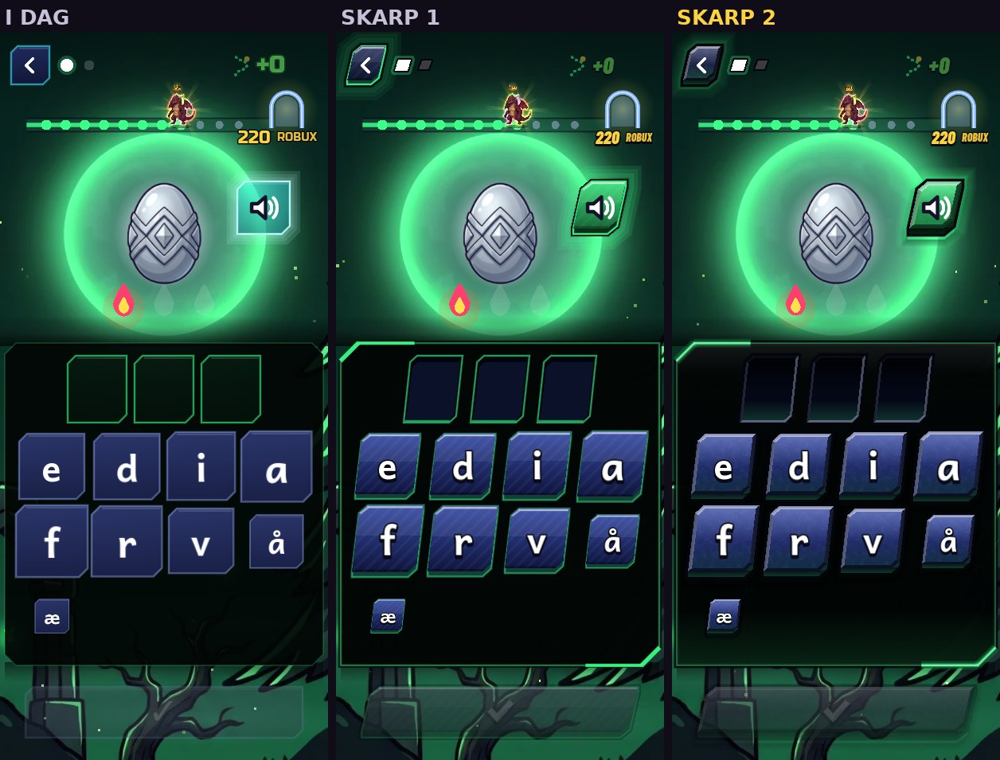
Lyntoppen

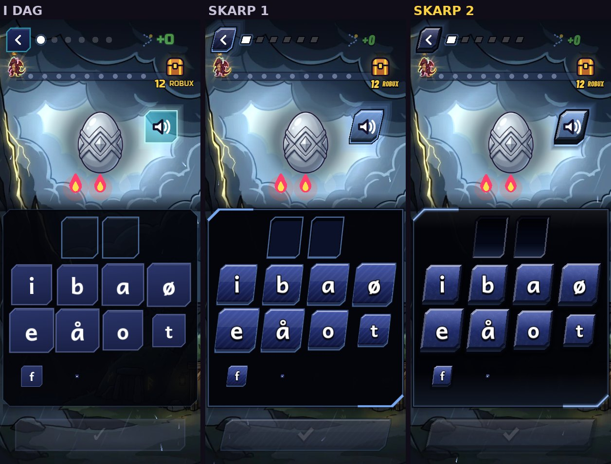
Ildgabet, ordet rigtigt

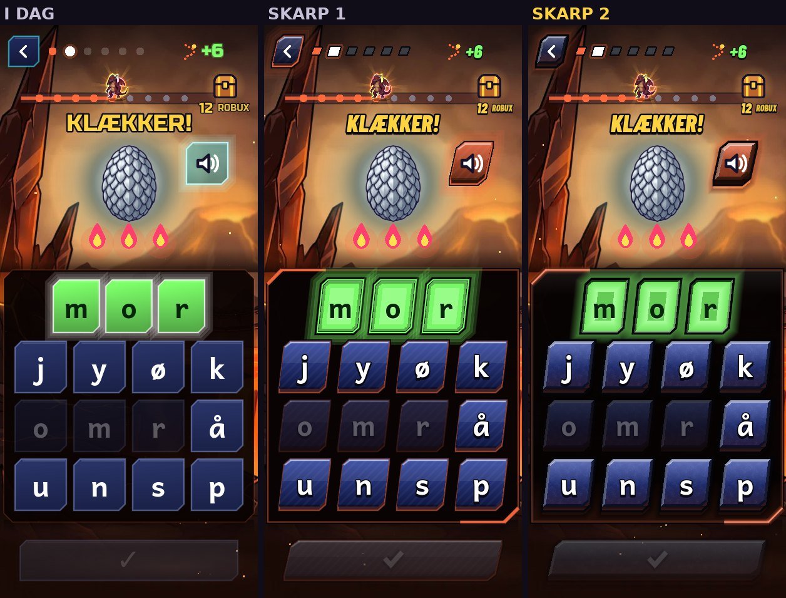
Startsiden

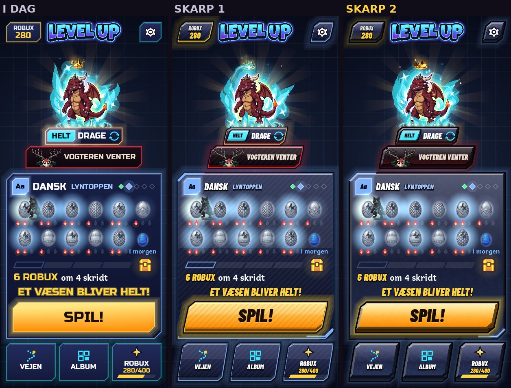
Gavekortet

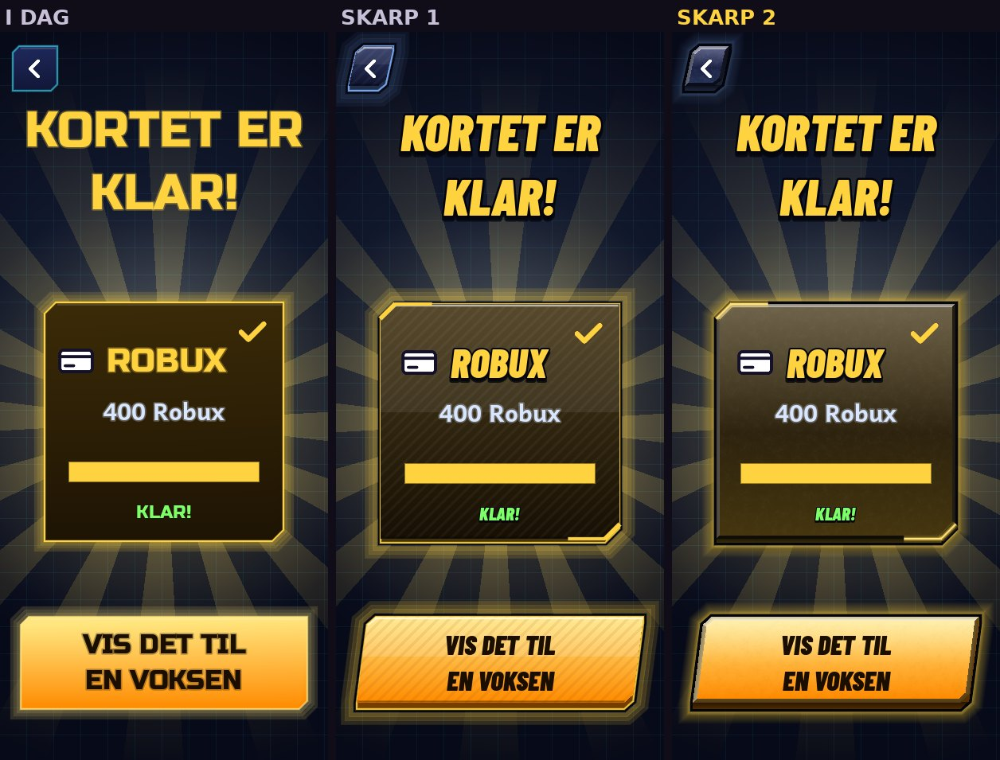
Tastaturet, et tryk

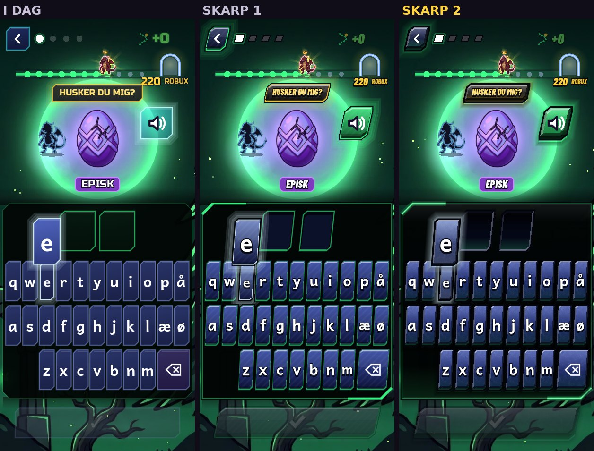
Runde klaret

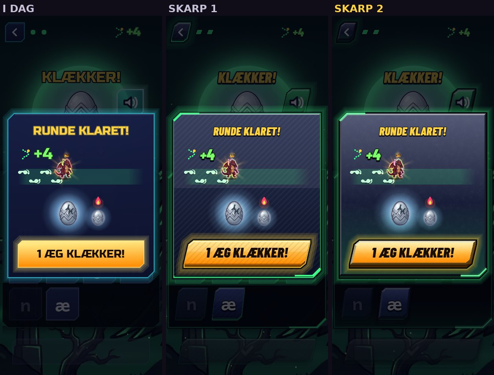
Liggende

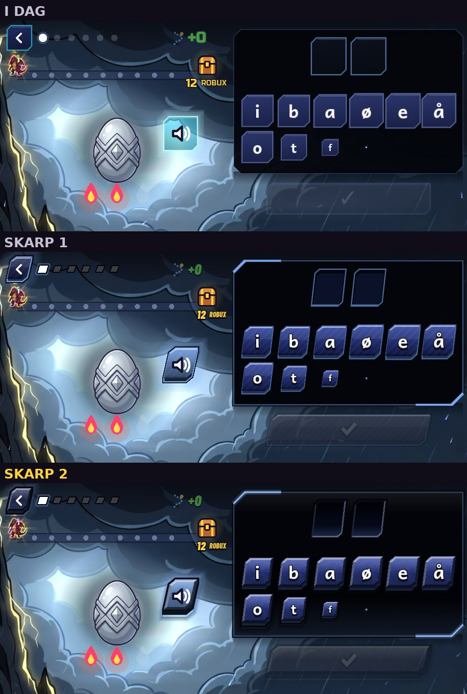

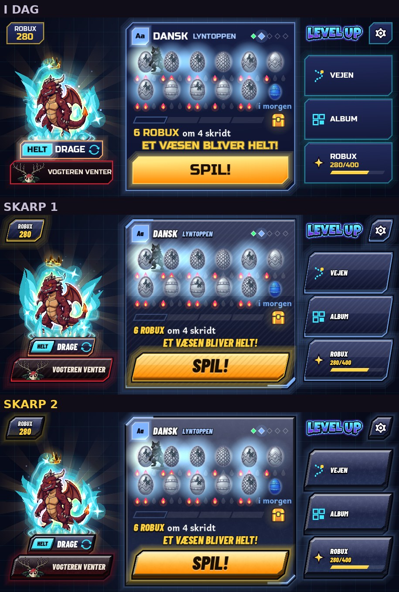
Min anbefaling og prisen
En blanding i trin, så intet males, før retningen sidder:
Intet slås til, før du (og Conrad) har sagt ja, og en uvildig skeptiker har set det fra appen.
Spørgsmålet: er Skarp 2 retningen? Jeg anbefaler ja, og så trin 2 gratis i koden.
Kilderne
Sessionens net åbner kun få sider, så artiklerne er læst gennem søgemaskinens uddrag. Billederne ligger hos kilderne (de tilhører spillenes udgivere) og er ikke kopieret hertil.
Flade knapper med overgang, en tekstur bag, en fed smal skrift. Ikke fasede klodser: blandes det med Clash' tykke underkant, opstår to sprog.
Malet i Photoshop, levende med 2D-effekter. Tyk mørk kant én gang om silhuetten, 2-3 toner pr. farve, samme lys overalt.
Genbrugelige dele med faste regler og polerede animationer. Tingene modelleres som genstande: afrundet kant, blankt glimt foroven, mørkere underkant i samme farve.
"Our game is UI": brugerfladen er en fysisk æske, hvor hver del er et troværdigt materiale i samme lys.
Nærmest vores tema: mørk magisk teknik med guld og turkis glød, former med mening, guld til knapper, der handler, og ét sprog for, hvordan kanterne fanger lyset.
Premium ved tilbageholdenhed: tynde linjer, få farver, bløde overgange, én accent.
Paneler som mørkt glas: maleriet dæmpes bag dem i stedet for at forsvinde.
Effekter i trin; den stærkeste kun på det vigtigste. Som vores guld kun på SPIL!.
Én fælles lampe; flere svage lag frem for én hård skygge.
Formens retning giver lyset på en afrundet kant; 9-slice bevarer hjørnerne; lidt støj fjerner trappetrin.
Leveres som 9-slice med tilstande (normal, tryk) og lag til at skifte farve; 3D-effekter må leveres i farver, for de kan ikke farves om.
Over 55.000 skærme fra rigtige spil.
Tilbage til knappernes udseende.